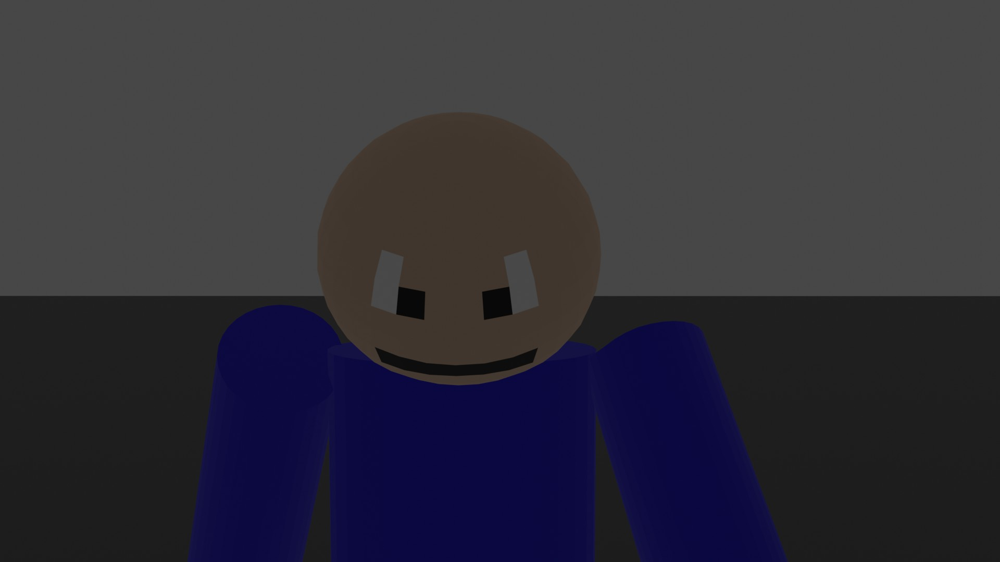
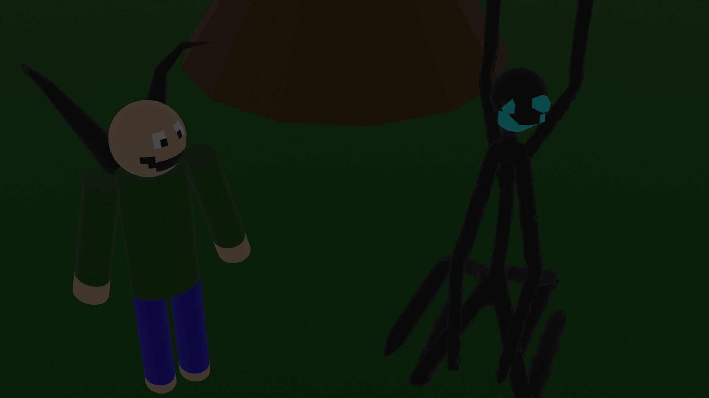
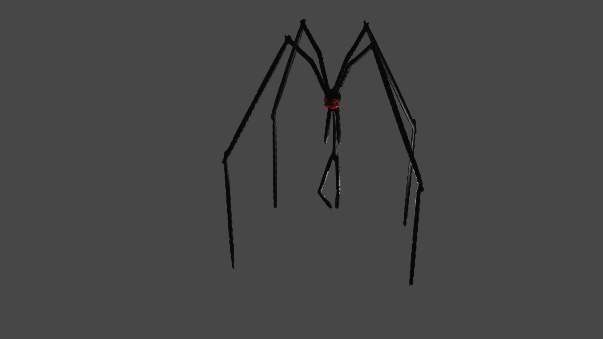
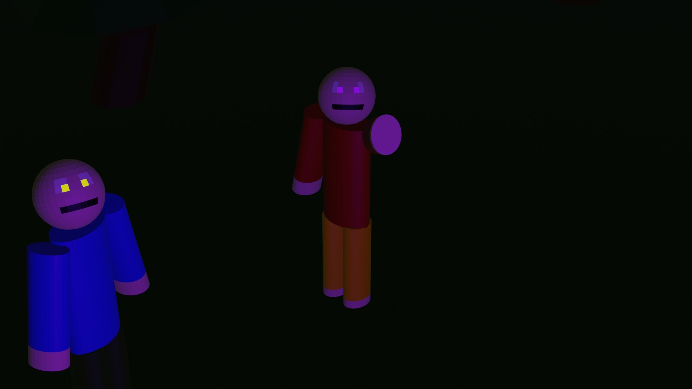
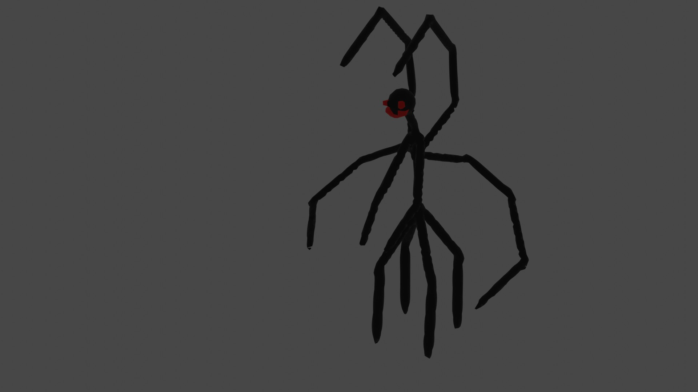

Fun Facts & Lore
This page will talk about the lore of Crimson Abyss, and say a couple of fun facts about the story and the characters.
Lore (Season 1)
The story starts out with the twins, Michael and Crim. They both were born with the same powers, which was pretty rare. But Michael would get all the praise, while Crim was just a bystander. They though Crim's powers looked more like they belong to a villian. Crim was envious of his brother, in fact, he was happy for him. This lead to Crim spending his time alone. But then one day, he accidently used a power he didn't know he had, void creation. His hand was resting on a passing ant, and that ant transformed into a tall monster. Crim was scared for a second, but then he realised that it wasn't attacking him. He desided to name it Fred, and he built up a good friendship with it. After a while, he showed Michael how to used void creation. But Michael didn't like it, he didn't like transforming things into creatures. Crim ran away with Fred and created the void. Crim created more void creatures and wanted to take over the world. He would send some of the creatures out into the world, which caused a lot of problems for people. Michael and Spike went out to solve the problem, and they found the void. When they entered the void, they got lost and attacked. Spike was turned into a void creature, while Michael continued to be lost in the void. Later, The Guy and Candy were playing outside. While they were playing, a void creature attacked them. Candy saved his brother, but was taken to the void. Candy later became the Stalker. After a while, The Guy went on to find his brother. When he was in the void, he met up with Michael and Blue Fred. He later found the Stalker and awakened to his powers. The Guy, with his void creature brother, friend and Michael went on to defeat Crim, with the cost of Michael. The three escaped the void, but the void creatures still caused problems. There was even more of them this time.
Lore (Season 2)
The story isn't finished yet so I'll just do a summary of what happends. Cannon meets up with The Guy, and The Guy explains what happened. The Guy, Candy, Blue Fred, and Cannon form a group to stop the void creatures. Michael is alive? Michael is a void creature? They find out Mega Fred is behind all of it. They band together to stop Mega Fred.
Fun Facts
This is where I will be telling you fun facts about the characters and the story.
Crim

Crim cares a lot about all of his void creatures. He also never showed any anger at all.
Michael

He was named after an angel, Michael, which makes sense because his powers represent light. In the first few animation he was in, his lasers were white.
The Guy
The Guy was originally not going to have any powers. He was the character to remain the longest without an official name.
Candy
Candy in canonically stronger than a hydra in season 2. Even though he was in his final form of the Stalker, his evolution ability continued to give him more power. But he never used any of it until season 2. Cannon gave him the nickname of Taffy.
The Stalker


The Stalker's three forms were a reference to a stand in Jojo's Bizzare Adventure, Echos. In the show, echos goes through three stages, Act 1, Act 2, and Act 3. Act 1 being the weakest form, Act 2 being able to cause harm, and Act 3 being it's strongest form. The Stalker can also mimic sounds.
Leghead
Leghead appeared the least out of all the characters. This was because of how it was rigged and the difficulty of animating it. Same thing goes with the Ripper.
Cannon
Cannon is the only character to have colored eyes. He has known The Guy and Candy since they were children.
Mega Fred
Mega Fred is the only void creature that is able to talk. He is also more powerful than Crim.
Fred & Blue Fred

Blue Fred was the only Fred that could fire lasers. Fred is the smartest out of all the void creatures.
Void Creatures
As a whole, all of the void creatures don't have any bones or organs, except for eyes and a mouth. This means that they don't need to eat or drink to survive. Void creatures are weaker in the sunlight (except for Blue Fred & the Stalker), which is why they are found in dark forests. They can also see very well in the dark. They communicate with eachother by fashing their faces in certain patterns. They are immune to drowning & poison, they can heal quickly, and they feel 75% less pain than humans.